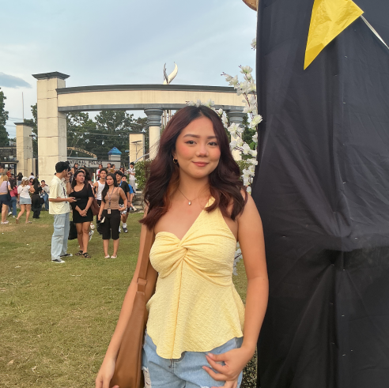
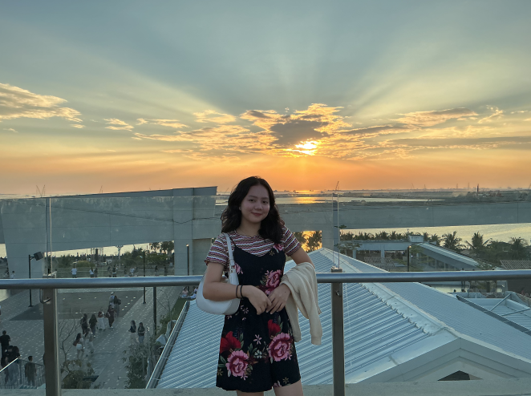
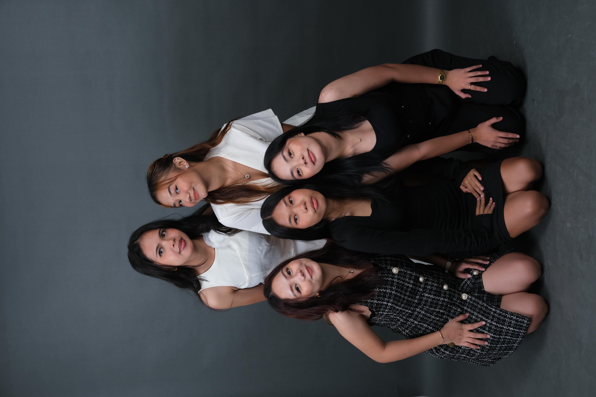
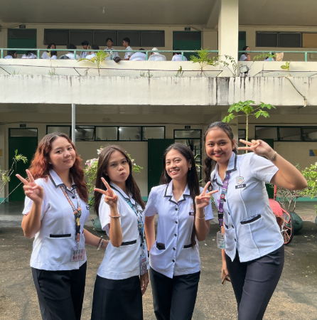
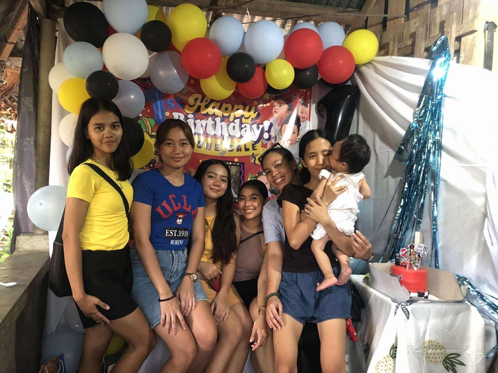
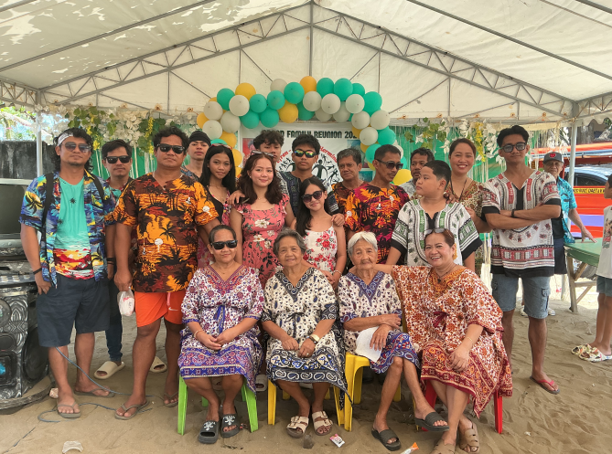
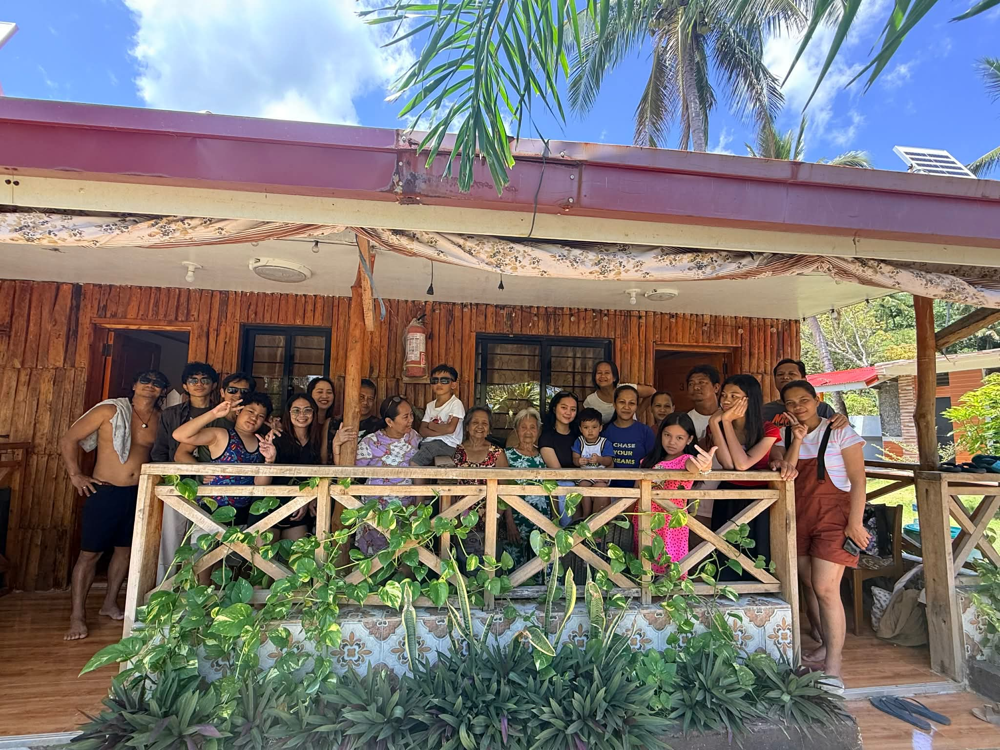
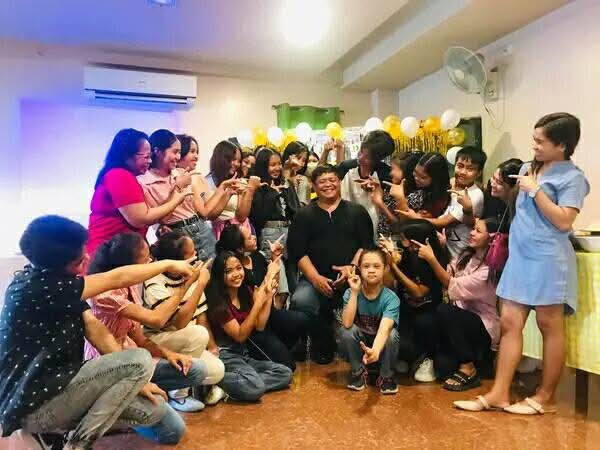
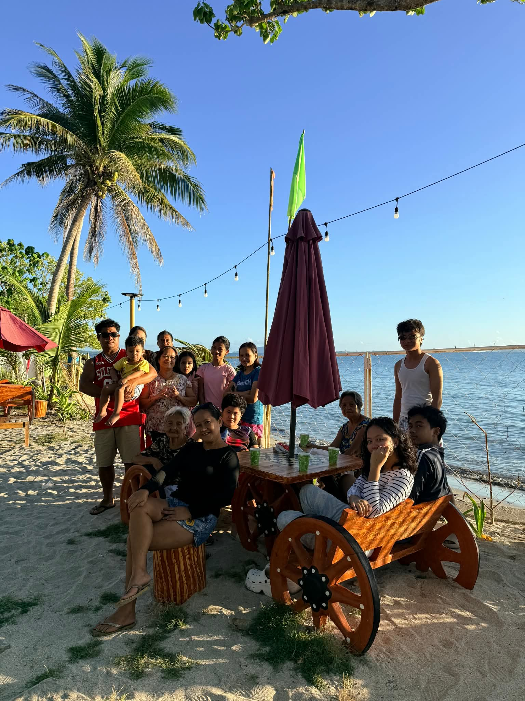
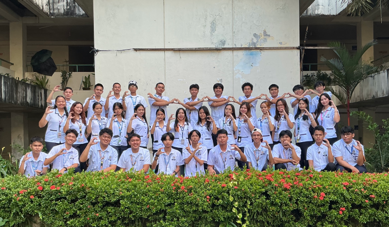

About Me
Hello! My name is Krisha Jane, and I am a first-year Bachelor of Science in Computer Science student at Bicol University. I enjoy expressing my creativity through design and exploring how technology can turn ideas into something useful. I chose Computer Science because I want to improve my programming skills, create meaningful projects, and continue learning about the world of technology.
My Hobbies and Goals
Things I Love Doing
- Creating graphic designs and layouts
- Exploring web design and coding
- Listening to music and spending time with friends
My Top 3 Goals
- Become confident in programming and problem-solving.
- Build websites and useful projects of my own.
- Use my skills to create something meaningful for others.
My Class Schedule
| Subject Name | Day of the Week | Time |
|---|---|---|
| Computer Programming 1 | Monday & Wednesday | 4:00 PM - 6:30 PM |
| Physics for Computing | Tuesday & Thursday | 1:00 PM - 2:30 PM |
| Mathematical Analysis | Tuesday & Thursday | 2:30 PM - 4:00 PM |
| CS 101: Introduction to Computing | Wednesday | 9:00 AM - 11:30 AM |
| Understanding the Self | Friday | 9:00 AM - 11:30 AM |
| Mathematical Analysis | Friday | 1:00 PM - 3:00 PM |
| PATHFIT | Saturday | 4:00 PM - 6:00 PM |
| NSTP-LTS | Saturday | 9:00 AM - 12:00 NN |
My Favorites
Here are two websites I enjoy visiting during my free time.
A little collection of memories
Little Moments I've Kept ♡
Some faces, places, and moments I never want to forget.
01 — Just Me
little pieces of myself

02 — My Favorite People
laughter is better shared


03 — Home & Family
where a part of my heart lives


04 — Moments Worth Keeping
cheers to more memories

“Some moments are too lovely to leave in the camera roll.”
A Thought to Keep ♡
"Maybe knowing yourself isn't about finding one perfect description. Maybe it's about noticing the little things that make you feel alive."
— A little reminder to myself
Things I Hold Close ♡
Some things that matter to me and shape the way I see life.
Solitude
I value having time for myself. It gives me space to breathe, reflect, and feel at peace.
Meaningful Connections
I value people I can be comfortable with, be myself around, and feel understood by.
Kindness & Compassion
I have a soft spot for children, older people, and animals. I believe even the smallest acts of kindness matter.
Emotional Depth
I value being able to feel deeply, even when it isn't always easy.
Personal Growth
I value becoming a better version of myself, one small step at a time.
Freedom
I love being able to explore, jog alone, watch sunsets, and enjoy life's little moments.